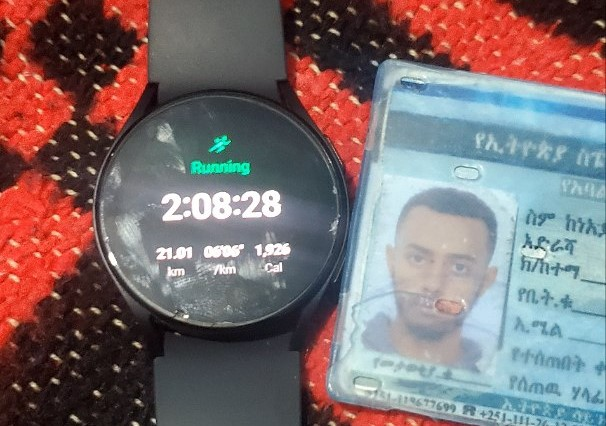
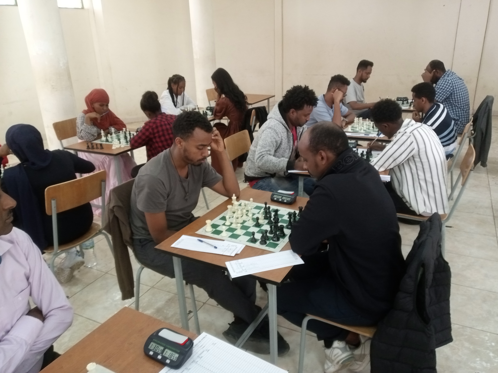
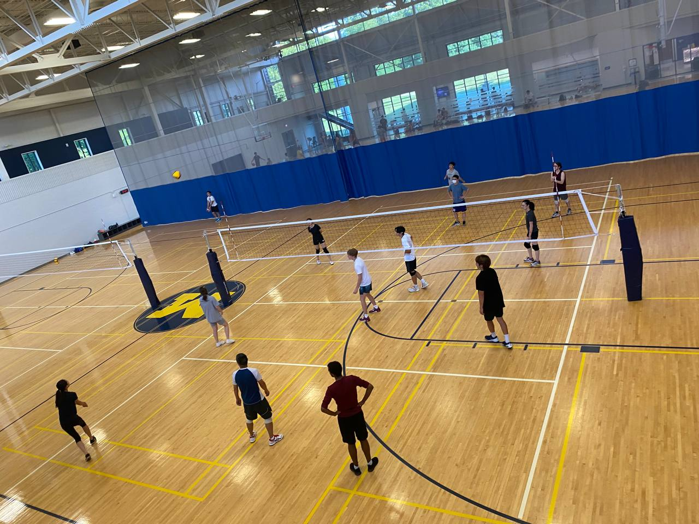
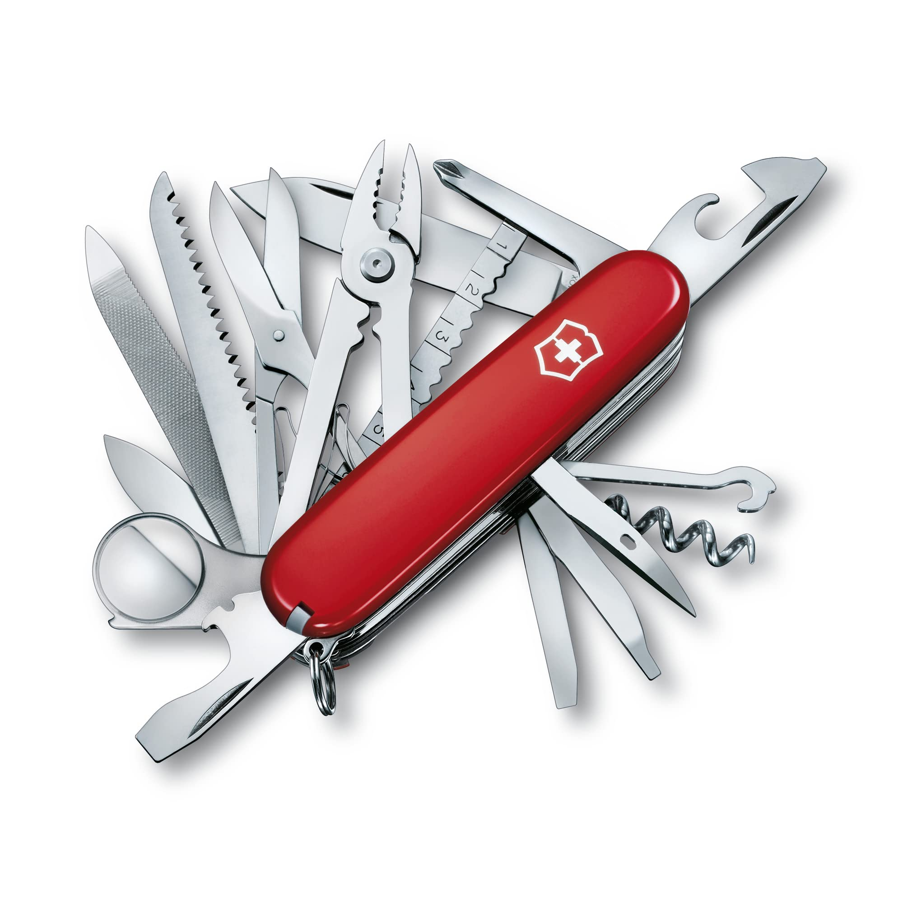

I have many many hobbies!
One of my favorite hobbies is medium- to long-distance running. I started running in my final year of undergraduate studies. My goal is someday to be able to run marathons and ultramarathons. My record is 21 km.
My other hobby is playing chess. I have been playing chess on and off since I was around 7 or 8 years old. I have only played in a legit tournament once, by no means I am not a professional player. I just enjoy playing chess. If you also like to play chess, you can challenge me at kalab@Chess.com.
I also really like playing volleyball, although I'm not good at it. Maybe it is because I started playing it relatively late. But it is a sport that you can improve at any age in life, and my improvement has been noticeable since I started playing it, which is a wonderful thing to see. Try and identify me in the picture.
 Even though not mentioned in detail, I have other hobbies too,
- I like to learn new skills. Here is a video compilation of skills I learned during the pandemic.
- I am also interested in expanding my knowledge of technology, world politics, economics, and physics and understanding how things work.
- It has been my goal since high school to learn a third language, I have tried to learn many different languages, and currently I am on a one-year streak learning German on Duolingo.
Thank you for your effort to know me.